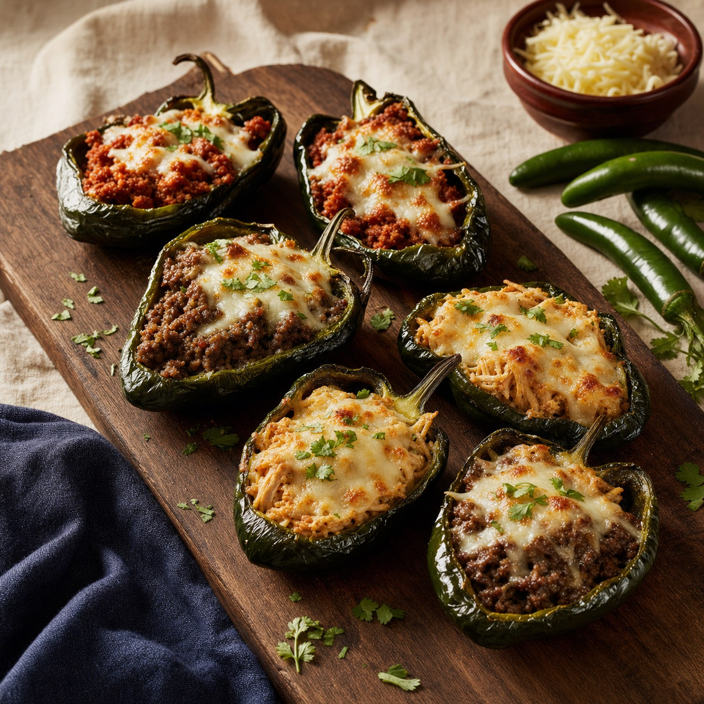

Halved poblanos par-roasted until they just bend, then loaded with three fillings built off one shared flavor base of onion, garlic, red pepper, jalapeño, and serrano. Chorizo, ground beef, and ground chicken, each folded with freshly shredded cheese off the heat. Bake a tray tonight and stack the rest in the freezer.
Heat the oven and clean the peppers. Set the oven to 425°F. Slice each poblano in half lengthwise from stem to tip, leaving the stem attached to one half for structure. Scrape out the seeds and white ribs with a spoon.
Leave the stem on where you can. It acts like a handle and keeps the half from collapsing when you stuff it.
Par-roast the poblano halves. Toss the halves with oil and a pinch of salt, lay them cut-side down on a parchment-lined sheet pan, and roast 12–15 minutes, until the skins blister in spots and the flesh bends without tearing. Turn them cut-side up and let them cool. Pour off any water that collected.
Do not skip this. Raw poblanos go into the oven with a lot of water in them, and it ends up in the bottom of the pan and under your cheese. Par-roasting drives it off and gives you a tender pepper instead of a crunchy one.
Cut the aromatics. Dice the onion and red bell pepper small, mince the jalapeño and serranos, and mince the garlic. Wear gloves for the hot peppers, and decide your heat now: seeds and ribs in for hot, seeds out for medium.
Mix the spice blend and split it in three. Stir the cumin, chili powder, smoked paprika, and Mexican oregano together, then divide into three equal piles, about 2 teaspoons each. One pile per filling.
Shred the cheese fresh. Grate each cheese on a box grater and keep the piles separate. Hold back about 2 ounces of each for the tops. Refrigerate until you fold it in.
Bagged shredded cheese is coated in potato starch and cellulose. It melts thick and a little grainy. Freshly shredded is the whole point of folding cheese into the filling instead of just piling it on top.
Two halves per person, one of each filling if you are feeding a crowd. Finish with lime crema, crumbled cotija, chopped cilantro, and quick-pickled red onion. The chili-lime aioli from the street tacos works here too if you already have it in the fridge.
| Starting from | Method | Time |
|---|---|---|
| Frozen, unbaked | Oven, 375°F | Covered with foil 35–40 min, then uncover, add cheese, 12–15 min more |
| Thawed overnight, unbaked | Oven, 400°F | Covered 15 min, then uncover, add cheese, 10–12 min more |
| Frozen, already baked | Oven, 350°F | Covered 30 min, then uncover 8–10 min |
| Frozen, unbaked | Air fryer, 350°F | 16–20 min, cheese added for the last 4 min |
| Frozen, already baked | Air fryer, 340°F | 10–12 min, cheese refreshed for the last 3 min |
| Fresh leftovers, from the fridge | Oven or air fryer, 350°F | 10–12 min |
Every version is done at the same finish line: 165°F in the center of the filling and cheese bubbling at the edges. Loose foil for the covered stage keeps the pepper from drying out while the middle catches up. The microwave works in a pinch — 2–3 minutes at 50% power — but the pepper goes limp and weepy, so it is the last resort.
Twelve to fifteen minutes cut-side down at 425°F. It softens the pepper and drives off the water that otherwise pools under the cheese.
Most are mild, but some run genuinely hot. Taste a raw sliver before you decide how much serrano to add.
Serrano flesh alone is a warm background. Leave the seeds and white ribs in and it climbs fast. Split the difference by seeding the jalapeño and keeping the serrano seeds.
Leave about a tablespoon for flavor and pour off the rest. Excess fat separates in the freezer and runs out when you reheat.
Wait 10 minutes off the heat. Around 150°F the cheese binds the filling. Straight off the burner it splits into oil.
Pre-shredded is coated in starch to stop clumping, which is exactly what you do not want in a filling that depends on a clean melt.
For the halves you plan to freeze, simmer the liquid down a little further. Ice crystals add moisture back on the reheat.
A mound just above the rim is right. Overstuffed halves tip, split, and dump filling into the pan.
Chorizo, beef, and chicken are indistinguishable through freezer wrap. Write the filling and the date on every bag.
Freeze them bare and add the topping cheese during the reheat. Cheese frozen on top browns unevenly and turns rubbery.
Serrano oil stays on your fingers through several hand washes and finds your eyes hours later. Nitrile gloves, then toss them.
The cheese already binds these, so no filler is needed. If you want to stretch the batch or bulk it up, fold ⅔ cup of rinsed black beans into each filling. It also freezes and reheats a touch better.
Swap a protein for two cans of rinsed black beans plus a cup of roasted corn, seasoned with the same spice portion. Same base, same cheese fold.
The onion, pepper, jalapeño, serrano, and garlic base keeps 3 days in the fridge. Making it a day ahead turns this into a much shorter cook.
Four halves at a time, in one layer with space between them. Crowd the basket and they steam instead of browning.